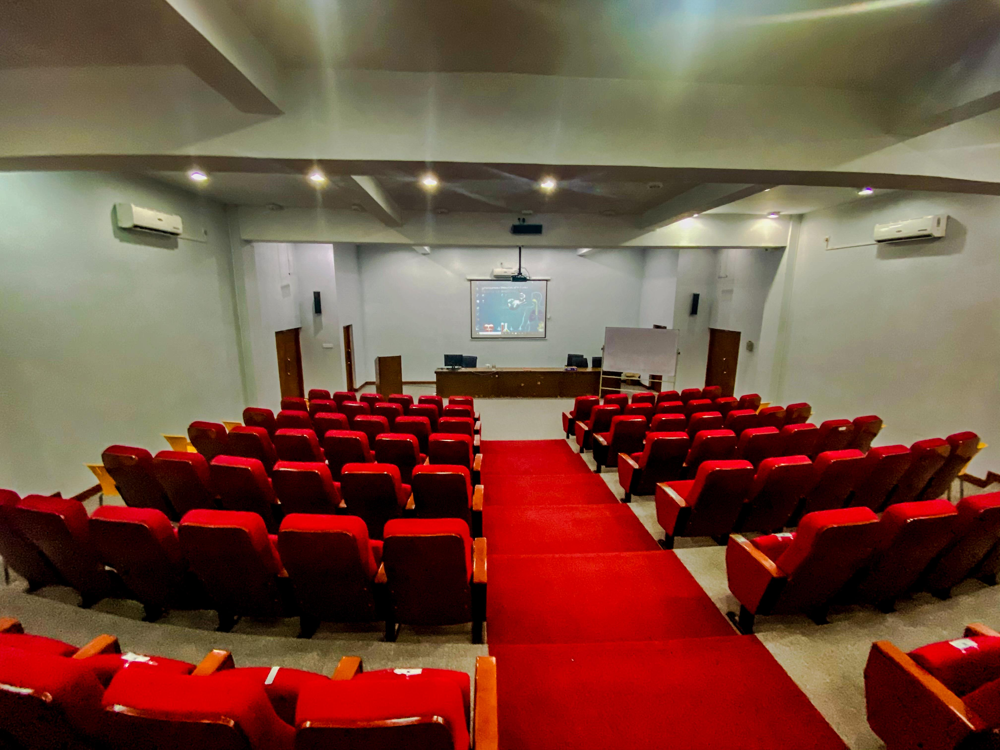

<!DOCTYPE html>
<html lang="en">
<head>
    <title>Webpage Design</title>
    <link rel="stylesheet" href="style.css">
    <link rel="stylesheet" href="https://pro.fontawesome.com/releases/v5.10.0/css/all.css" integrity="sha384-AYmEC3Yw5cVb3ZcuHtOA93w35dYTsvhLPVnYs9eStHfGJvOvKxVfELGroGkvsg+p" crossorigin="anonymous"/>
</head>
<body>

    <section class="main">
        <div class="navbar">
            <div class="icon">
                <h2 class="logo">SUSL</h2>
            </div>

            <div class="menu">
                <ul>
                    <li><a href="index.html"><i class="fa fa-home" aria-hidden="true"></i>HOME</a></li>
                    
                    <li><a href="about.html"><i class="fa fa-user-circle" aria-hidden="true"></i>ABOUT</a>
                         
                     </li>
                    <li><a href="faculty.html"><i class="fa fa-university" aria-hidden="true"></i>FACULTY</a>
                        
                    </li>
                    <li><a href="department.html"><i class="fa fa-universal-access" aria-hidden="true"></i>DEPARTMENTS</a></li>
                    <li><a href="contact.html"><i class="fa fa-phone" aria-hidden="true"></i>CONTACT</a></li>
                </ul>
            </div>

            <div class="search">
                <input class="srch" type="search" name="" placeholder="Type To text">
                <a href="#"> <button class="btn"><i class="fa fa-search" aria-hidden="true"></i>Search</button></a>
            </div>

        </div>
        <div class="content">
            <h1>Faculty of<br><span>Applied Sciences</span><br></h1>
            <h2> Sabaragamuwa University of sri Lanka</h2>
            <p class="par">“To extend its’ facilities and services to develop as a premier centre<br> for higher
education and advanced research in the field of technology,<br> thus enabling students
following the degree program to obtain<br> a sound knowledge and acquire multidisciplinary skills”</p>

                <button class="cn"><a href="#">JOIN US</a></button>

                <div class="form">
                    <h3>Login Here</h3>
                    <input type="email" name="email" placeholder="Enter Email Here">
                    <input type="password" name="" placeholder="Enter Password Here">
                    <button class="btnn"><a href="#">Login</a></button>

                    <p class="link">Don't have an account<br>
                    <a href="#">Sign up </a> here</a></p>
                    <p class="liw">Log in with</p>

                    <div class="icons">
                        <a href="#"><ion-icon name="logo-facebook"></ion-icon></a>
                        <a href="#"><ion-icon name="logo-instagram"></ion-icon></a>
                        <a href="#"><ion-icon name="logo-twitter"></ion-icon></a>
                        <a href="#"><ion-icon name="logo-google"></ion-icon></a>
                        <a href="#"><ion-icon name="logo-skype"></ion-icon></a>
                    </div>

                </div>
                    </div>
                </div>
        </div>
    </div> </section>
    <script src="https://unpkg.com/ionicons@5.4.0/dist/ionicons.js"></script>

    <!------Course------->
    <section class="course">
        <h1> SUSL</h1>
        <p> Sabaragamuwa University of Sri Lanka</p>
        <div class="row">
            <div class="course-col">
            <h3> Vision</h3>
            <p>The University has expressed the vision “to be an internationally acclaimed center of
excellence in higher learning and research, producing dynamic managers, leaders
and nation builders to guide the destiny of Sri Lanka”.</p>
        </div>
            <div class="course-col">
            <h3> Logo</h3>
            <p>The University logo comprises a traditional oil lamp, rays of light, books, the
Samanala (peak wilderness) mountain, gems, and sheaves of paddy, symbolizing the
region and the people that it serves and the ideas for which they stand. The
traditional oil lamp and the rays of light denote the imparting of knowledge and
enlightenment; books represent education; the Samanala Mountain and gem stand
for the Sabaragamuwa Province and Rathnapura District respectively, and the
sheaves of paddy symbols prosperity.</p>
        </div>
         <div class="course-col">
            <h3> Mission</h3>
            <p>The mission of the University is “to search for and disseminate knowledge, promote
learning, research and training to produce men and women proficient in their
respective disciplines possessing practical skills and positive attitudes enabling to
contribute towards sustainable development of the country”.</p>
      </div>
     </div>
 </section>
<!-------Campus-------->

<section class="campus">
    <h1> Our University.</h1>
    <p> Sabaragamuwa University of Sri Lanka</p>

    <div class="row">
        <div class="campus-col">
            
            <div class=" layer">
                <h3>ENTRANCE</h3>
            </div>
        </div>
            <div class="campus-col">
            
            <div class=" layer">
                <h3>WAY</h3>
            </div>
        </div>
            <div class="campus-col">
            
            <div class=" layer">
                <h3>BUILDING</h3>
            </div>
        </div>
    </div>
        <div class="row">
        <div class="campus-col">
            
            <div class=" layer">
                <h3>ENTRNACE</h3>
            </div>
        </div>
            <div class="campus-col">
            
            <div class=" layer">
                <h3>Open Theature</h3>
            </div>
        </div>
            <div class="campus-col">
            
            <div class=" layer">
                <h3>GROUND</h3>
            </div>
        </div>
    </div>
</section>
<!------- Facilities------>
    
<section class="facilities">
    <h1>Our Facilities</h1>
    <p>There are many facilities in our University<br>STUDENT SERVICES AND AMENITIES</p>
    <div class="row">
        <div class="facilities-col">
            
            <h3> class library</h3>
            <p> <b>Library of sabaragamuwa University of Srilanka</b><br>There are over 126,000 books and about 150 periodicals, including hansards, Acts 
Gazette and daily newspaper in Sinhala, Tamil and English available throughtout the 
library network and many online databases are available for research purposes. The 
University has three branch libraries in addition to the main library.</p>
        </div>
        <div class="facilities-col">
            
            <h3> Largest Playground</h3>
            <p><b> Play Ground of sabaragamuwa University</b><br>The sports facilities include 25 metre swimming pool, two tennis courts, badminton, 
squash, volleyball, basket ball and netball courts, weight lifting and exercise
equipment. Please contact the Physical Education Department for details (Tel:
0452280036).</p>
        </div>
        <div class="facilities-col">
            
            <h3> Tasty & Healthy Food</h3>
            <p><b> Canteen of sabaragamuwa University of Srilanka</b><br>The University canteen offers breakfast, lunch and dinner as well as tea, soft drinks
and various snacks throughout the day. Hours of operation are from 7.00 a.m. to 9.30
p.m. It may be necessary to order main meals in advance. Two Hostel canteens are
available for hostellers</p>
        </div>
    </div>
    <div class="row">
        <div class="facilities-col">
            
            <h3> Sports Facilities</h3>
            <p> <b>Swimming pool</b><br>The sports facilities include 25 metre swimming pool, two tennis courts, badminton, 
squash, volleyball, basket ball and netball courts, weight lifting and exercise
equipment. Please contact the Physical Education Department for details (Tel:
0452280036).</p>
        </div>
      
        <div class="facilities-col">
            
            <h3> Telephone Calls</h3>
            <p> You can make outgoing telephone calls from the Telephone Operator’s Room, located
opposite the Main office. Messages from incoming calls (Tel: 045-2280014) will be
forwarded to you as soon as possible. To help speed up the process, the caller should
leave recipient’s name and specify which degree programme he or she is following.</p>
        </div>
        <div class="facilities-col">
            
            <h3> Laboratories</h3>
            <p><b> Computer Centres of applied sciences faculty</b><br> There are four computer centres in the faculty, having a number
of state- of-the-art computers and printers. Ample amounts of application packages
are available. Software facilities are available for various types of computer
applications. The Local Area Network provides e-mail and Internet facilities through
a leased line and wi-fi.</p>
        </div>
    </div>
    <div class="row">
        
         <div class="facilities-col">
            
            <h3> Bank Facilities</h3>
            <p> <b>ATM Machine</b><br>Students can open accounts with the Bank of Ceylon’s branch near the main entrance
and the People's Bank branch at Pambahinna junction. They provide nearly all of the
services of a regular bank branch office. Two ATM machines are located near the 
main entrance to the university.</p>
        </div>
        <div class="facilities-col">
            
            <h3> Medical Facilities</h3>
            <p> A student can obtain basic medical care at the University Medical Centre, which is
open from 8.00 a.m. to 4.00 p.m. on weekdays. In addition, the Pambahinna
peripheral hospital is located close to the university.
Sports Facilities.</p>
        </div>
        <div class="facilities-col">
            
            <h3> Student Centre</h3>
            <p>The Students Centre building serves as a studentrecreation hall, with facilities to play
table tennis, carom, chess etc. <br><b> Carrier Guidance Unit:</b>
This unit offers services in the area of developing undergraduates career prospects.

        </div>
    </div>
     <div class="row">
        
         <div class="facilities-col">
            
            <h3> Hostel Facilities</h3>
            <p> The University has 29 hostels to offer for accommodation. Some of these hostels are located within the university premises while others are situated in close-by areas. The total capacity of these hostels can provide accommodation up to 45% of the student population.<br>

First and third year students are given priority in the selection process in order to be of more assistance to their studies. One and half months before the end each academic year, you will be informed about your hostel facilities for the next year.<br>

Hostels are administered simultaneously by two senior members of the academic staff and fulltime sub-wardens. In addition there are other part-time sub-wardens appointed from the academic staff to help administration further. Hostels are equipped with able staff to handle daily services.<br>

A set of rules and regulations are lined up for students to abide by. These are to be followed with utmost attention which benefits both students and the university.<br>

Common conditions and rules and regulations for residential students</p>
        </div>
        
    </div>
</section>

<!-------- testimonials----->
<section class="testimonials">
    <h1> What our Student says</h1>
    <p> Students of our University(SUSL)</p>

    <div class="row">
        <div class=" testimonial-col">
            
            <div>
                <p>The BAUC offered two diploma courses, one in Food Science and Technology and
the other in English Language. With the elevation of the Affiliated University
Colleges to fully fledged national Universities in early 1996, three Affiliated

form the Sabaragamuwa Univ</p>
<h3> Thilkas Rusthy</h3>
<i class="fa fa-star" aria-hidden="true"></i>
<i class="fa fa-star" aria-hidden="true"></i>
<i class="fa fa-star" aria-hidden="true"></i>
<i class="fa fa-star" aria-hidden="true"></i>
<i class="fa fa-star-half" aria-hidden="true"></i>

            </div>
            
        </div>
         <div class=" testimonial-col">
            
            <div>
                <p>The BAUC offered two diploma courses, one in Food Science and Technology and
thuwa Affiliated University College, Uva Affiliated
University College and Buttala Affiliated University College were amalgamated to
form the Sabaragamuwa Univ</p>
<h3> Thilkas Rusthy</h3>
<i class="fa fa-star" aria-hidden="true"></i>
<i class="fa fa-star" aria-hidden="true"></i>
<i class="fa fa-star" aria-hidden="true"></i>
<i class="fa fa-star" aria-hidden="true"></i>
<i class="fa fa-star" aria-hidden="true"></i>
</div>
</div>
    </div>
</section>

<!---------- Call to Action---->
<section class="cta">
    <h1> FOR get more information and <br> Details about our University</h1>
    <a href="contact.html" class="hero-btn">CONTACT</a>
    
</section>

<!-------footer------>
<div class="footer"> Natha M.S.S</div>
 <footer class="footer-distributed">
 
 <div class="footer-left">
 
 <h3>SU<span>SL</span></h3>
 
 <p class="footer-links">
 <a href="#">Home</a>
 ·
 <a href="#">About</a>
 ·
 <a href="#">Faculty</a>
 ·
 <a href="#">Department</a>
 ·
 <a href="#">Contact</a>
 </p>
 
 <p class="footer-company-name">© Copyright SUSL 2021. All Rights Reserved.</p>
 </div>
 
 <div class="footer-center">
 
 <div>
 <i class="fa fa-map-marker"></i>
 <p><span>Faculty of Applied Sciences<br>
Sabaragamuwa University of Sri Lanka<br>
P.O. Box 02
</span> Belihuloya, 70140 Sri Lanka</p>
 </div>
 
 <div>
 <i class="fa fa-phone"></i>
 <p>045-2280014</p>
 </div>
 
 <div>
 <i class="fa fa-envelope"></i>
 <p><a href="mailto:support@company.com">info@sab.ac.lk</a></p>
 </div>
 
 </div>
 
 <div class="footer-right">
 
 <p class="footer-company-about">
 <span>Location</span>
 The University is situated about 18 kilometers from the Balangoda town along the
Badulla- Colombo road. It is located on the Samanalawewa Road, around 500 metres
from the Pambahinna junction, situated 162 km from Colombo and 76 km from
Badulla. (Other distances: 60 km to Ratnapura, 50 km to Bandarawela)</p>
 
 <div class="footer-icons">
 
 <a href="#"><ion-icon name="logo-facebook"></ion-icon></a>
                        <a href="#"><ion-icon name="logo-instagram"></ion-icon></a>
                        <a href="#"><ion-icon name="logo-twitter"></ion-icon></a>
                        <a href="#"><ion-icon name="logo-google"></ion-icon></a>
                        <a href="#"><ion-icon name="logo-skype"></ion-icon></a>
 </div>
 
 </div>
 
 </footer>
 
</body>
</html>